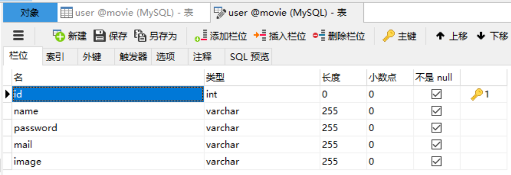
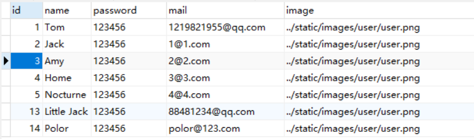
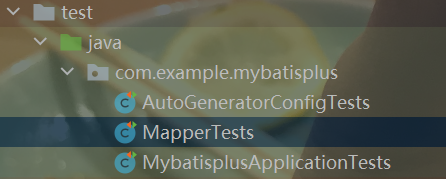
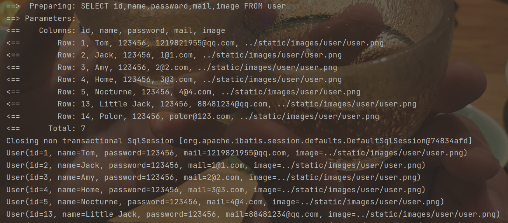
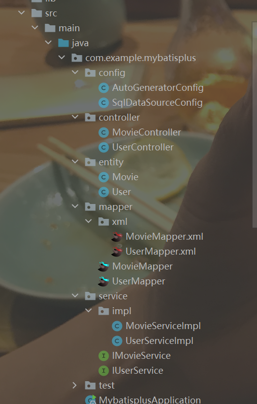
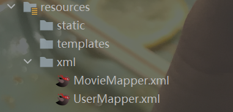
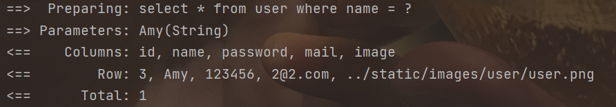
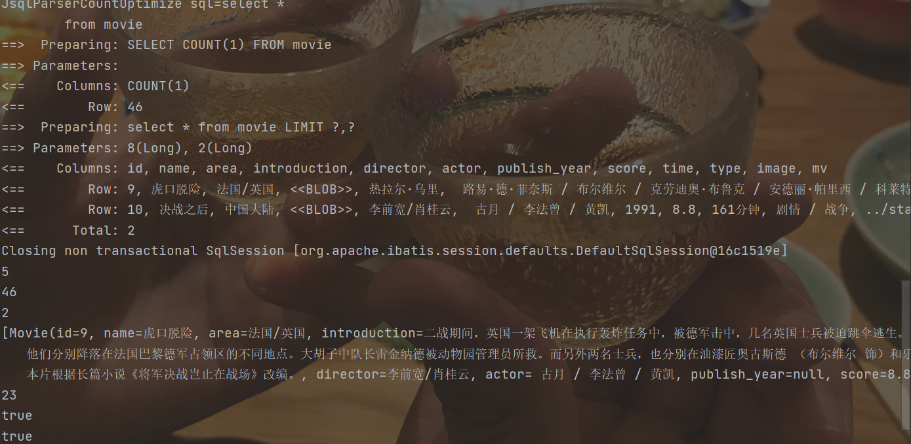
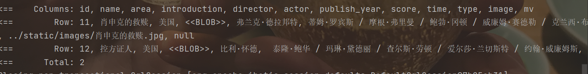
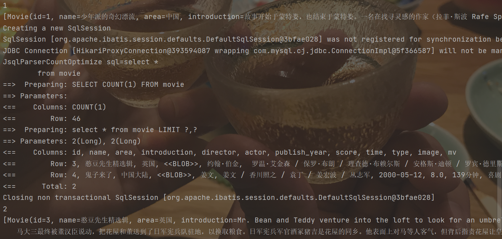

MyBatis-Plus
MyBatis-Plus
内容总览：
简单测试
使用的数据库表：

内容信息：

1、在pom.xml中添加相关配置
<dependency> <groupId>com.baomidou</groupId> <artifactId>mybatis-plus-boot-starter</artifactId> <version>3.3.1.tmp</version></dependency>为了方便测试，因此在pom.xml文件中添加测试所需要的依赖
xxxxxxxxxx<dependency> <groupId>org.springframework.boot</groupId> <artifactId>spring-boot-test</artifactId></dependency>2、在application.yml中添加配置
xxxxxxxxxx# 用于显示执行的sql语句mybatis-plus configuration log-implorg.apache.ibatis.logging.stdout.StdOutImpl3、创建数据库表对应的entity和mapper文件
User类：在创建该User类使用了lombok组件，可以简化类的编写。
@Data提供了getter和setter
@AllArgsConstructor提供全参构造函数
@NoArgsConstructor提供无参构造函数
xpublic class User { Integer id; String name; String password; String mail; String image;}Mapper类：直接继承BaseMapper
xxxxxxxxxxpublic interface UserMapper extends BaseMapper<User> {}4、在启动类上添加Mapper文件的检索注解@MapperScan
xxxxxxxxxx("com.example.mybatisplus.mapper")public class MybatisplusApplication { public static void main(String[] args) { SpringApplication.run(MybatisplusApplication.class, args); }}5、测试
在项目文件的test文件夹中创建MapperTests测试类

xxxxxxxxxxpublic class MapperTests { UserMapper userMapper; public void selectListTest(){ List<User> userList = userMapper.selectList(null); userList.forEach(System.out::println); }}6、执行结果

代码自动生成器（旧版本）
1、在pom.xml文件中添加相应依赖（同时也要有mybatis-plus-boot-starter依赖）
xxxxxxxxxx<dependency> <groupId>com.baomidou</groupId> <artifactId>mybatis-plus-generator</artifactId> <version>3.3.1.tmp</version></dependency>在使用MyBatis-Plus中的代码自动生成器时，需要模板引擎，它支持Velocity(默认)、Freemaker、Beetl，
xxxxxxxxxx<!-- https://mvnrepository.com/artifact/org.apache.velocity/velocity-engine-core --><dependency> <groupId>org.apache.velocity</groupId> <artifactId>velocity-engine-core</artifactId> <version>2.2</version></dependency><!-- https://mvnrepository.com/artifact/org.freemarker/freemarker --><dependency> <groupId>org.freemarker</groupId> <artifactId>freemarker</artifactId> <version>2.3.30</version></dependency><!-- https://mvnrepository.com/artifact/com.ibeetl/beetl --><dependency> <groupId>com.ibeetl</groupId> <artifactId>beetl</artifactId> <version>3.1.3.RELEASE</version></dependency>如果选择了非默认引擎，需要在AutoGenerator中配置相关引擎：
xxxxxxxxxxAutoGenerator generator = new AutoGenerator();// set freemarker enginegenerator.setTemplateEngine(new FreemarkerTemplateEngine());// set beetl enginegenerator.setTemplateEngine(new BeetlTemplateEngine());// set custom engine (reference class is your custom engine class)generator.setTemplateEngine(new CustomTemplateEngine());// other config...在此我选择使用Velocity默认模板引擎，所以在pom.xml文件中添加如下依赖：
xxxxxxxxxx<dependency> <groupId>org.apache.velocity</groupId> <artifactId>velocity-engine-core</artifactId> <version>2.3</version></dependency>踩坑：
在添加依赖时，并没有在pom.xml文件中配置org.apache.common:commons-lang3:3.10，但他报错显示没有找到该依赖，我从该网站commons-lang3下载commons-lang3.jar、commons-lang3-resources.jar、commons-lang3-javadoc.jar文件，然后拷贝到本地maven库当中就可以了
2、编辑数据库信息读取类
xxxxxxxxxxpublic class SqlDataSourceConfig { ("${spring.datasource.url}") private String url; ("${spring.datasource.username}") private String userName; ("${spring.datasource.password}") private String password; ("${spring.datasource.driver-class-name}") private String driver;}编写该类是为了方便获取application.yml文件中的数据库连接配置信息
3、编写测试类
在test文件夹下创建AutoGeneratorConfigTests类
xxxxxxxxxxclass AutoGeneratorConfigTests { //注入数据库配置信息类 private SqlDataSourceConfig sqlDataSourceConfig; public void autoGeneratorTest(){ //1、创建代码生成器 AutoGenerator mpg = new AutoGenerator(); //2、全局配置 GlobalConfig gc = new GlobalConfig(); //获取项目路径 String projectPath = System.getProperty("user.dir"); //设置文件输出路径 gc.setOutputDir(projectPath+"/src/main/java"); //设置作者 gc.setAuthor("life"); //生成后是否打开文件夹 gc.setOpen(false); //重新生成文件时是否覆盖 gc.setFileOverride(false); mpg.setGlobalConfig(gc); //3、数据源配置 DataSourceConfig dsc = new DataSourceConfig(); dsc.setUrl(sqlDataSourceConfig.getUrl()); dsc.setDriverName(sqlDataSourceConfig.getDriver()); dsc.setUsername(sqlDataSourceConfig.getUserName()); dsc.setPassword(sqlDataSourceConfig.getPassword()); dsc.setDbType(DbType.MYSQL); mpg.setDataSource(dsc); //4、包配置 PackageConfig pc = new PackageConfig(); //设置父包名 pc.setParent("com.example.mybatisplus"); //设置模块名 pc.setModuleName(null); mpg.setPackageInfo(pc); //5、策略配置 StrategyConfig strategyConfig = new StrategyConfig(); //设置要建立映射的数据库表，支持同事建立多个表 strategyConfig.setInclude("user","movie"); //数据库表映射到实体的命名策略 //strategyConfig.setNaming(NamingStrategy.underline_to_camel); //生成实体时去掉表名前缀 //strategyConfig.setTablePrefix(pc.getModuleName()+"_"); //设置数据库表字段映射到实体的命名策略 //strategyConfig.setColumnNaming(NamingStrategy.underline_to_camel); //设置实体的Lombok的风格 strategyConfig.setEntityLombokModel(true); //配置rest风格的Controller(@RestController) //strategyConfig.setRestControllerStyle(true); //配置驼峰转连字符 strategyConfig.setControllerMappingHyphenStyle(true); mpg.setStrategy(strategyConfig); //6、执行 mpg.execute(); }}4、执行结果展示

如果添加了模块名参数，则会在父包下的对应文件夹下输出文件。比如将pc.setMoudleName(null)改为pc.setMoudleName("test")，则会在mybatisplus目录下创建一个test文件夹，然后将文件输出到test文件夹下，上图的test文件夹就是按照此种方法产生的。
(ps:当项目启动时自动执行某一方法的一种策略
为了实现当项目启动时会自动执行代码自动生成的函数，我进行了如下操作：
创建一个带有@Component注解的类，其中包含了自定义的代码自动生成函数，并为该函数添加@PostConstruct注解，然后在启动类中设置@ComponentScan，扫描该类所在的包，当扫描到该类时，会自动执行带有@PostConstruct注解的函数。
xxxxxxxxxxpublic class AutoGeneratorConfig { SqlDataSourceConfig sqlDataSourceConfig; public void AutoGenerator(){ //1、创建代码生成器 AutoGenerator mpg = new AutoGenerator(); //2、全局配置 GlobalConfig gc = new GlobalConfig(); //获取项目路径 String projectPath = System.getProperty("user.dir"); //设置文件输出路径 gc.setOutputDir(projectPath+"/src/main/java"); //设置作者 gc.setAuthor("life"); //生成后是否打开文件夹 gc.setOpen(false); //重新生成文件时是否覆盖 gc.setFileOverride(false); mpg.setGlobalConfig(gc); //3、数据源配置 DataSourceConfig dsc = new DataSourceConfig(); dsc.setUrl(sqlDataSourceConfig.getUrl()); dsc.setDriverName(sqlDataSourceConfig.getDriver()); dsc.setUsername(sqlDataSourceConfig.getUserName()); dsc.setPassword(sqlDataSourceConfig.getPassword()); dsc.setDbType(DbType.MYSQL); mpg.setDataSource(dsc); //4、包配置 PackageConfig pc = new PackageConfig(); //设置父包名 pc.setParent("com.example.mybatisplus"); //设置模块名 pc.setModuleName(null); mpg.setPackageInfo(pc); //5、策略配置 StrategyConfig strategyConfig = new StrategyConfig(); //设置要建立映射的数据库表 strategyConfig.setInclude("user","movie"); //数据库表映射到实体的命名策略 //strategyConfig.setNaming(NamingStrategy.underline_to_camel); //生成实体时去掉表名前缀 //strategyConfig.setTablePrefix(pc.getModuleName()+"_"); //设置数据库表字段映射到实体的命名策略 //strategyConfig.setColumnNaming(NamingStrategy.underline_to_camel); //设置实体的Lombok的风格 strategyConfig.setEntityLombokModel(true); //配置rest风格的Controller(@RestController) //strategyConfig.setRestControllerStyle(true); //配置驼峰转连字符 strategyConfig.setControllerMappingHyphenStyle(true); mpg.setStrategy(strategyConfig); //6、执行 mpg.execute(); } public void test(){ System.out.println("---------PostConstruct-----------"); }}xxxxxxxxxx(basePackages = {"com.example.mybatisplus.config","com.example.mybatisplus.mapper"})//@MapperScan("com.example.mybatisplus.mapper")public class MybatisplusApplication { public static void main(String[] args) { SpringApplication.run(MybatisplusApplication.class, args); }}自定义sql语句
1、设置xml文件路径
在使用自定义sql语句时，首先要在application..yml中配置xml文件所在的位置，为了方便，我将生成的xml文件移动到了resources目录之下

在yml文件中添加配置语句：
xxxxxxxxxxmybatis-plus mapper-locationsclasspathxml/*Mapper.xml2、在xml文件中添加所需要的查询语句
xxxxxxxxxx<select id="getByName" resultType="com.example.mybatisplus.entity.User"> select * from user where name = #{name}</select>3、在mapper文件中添加对应的函数
xxxxxxxxxxpublic interface UserMapper extends BaseMapper<User> { User getByName(String name);}4、在Service中添加相关调用
5、运行结果

条件构造器
除了上述的原始自定义sql语句方法，还可以通过条件构造器Wrapper的方法，来实现自定义sql语句。
查询分页
1、创建配置类
创建一个配置类MyBatisPlusConfig，添加@Configuration注解，在其中创建方法PaginationInterceptor paginationInterceptor()，并为其添加@Bean注解交给Spring容器来管理。
xxxxxxxxxx//@MapperScan("com.example.mybatisplus.mapper")public class MyBatisPlusConfig { /** * 分页实例 * @return PaginationInterceptor */ public PaginationInterceptor paginationInterceptor(){ PaginationInterceptor paginationInterceptor = new PaginationInterceptor(); // 设置请求的页面大于最大页后操作， true调回到首页，false 继续请求 默认false // paginationInterceptor.setOverflow(false); // 设置最大单页限制数量，默认 500 条，-1 不受限制 paginationInterceptor.setLimit(20); // 开启 count 的 join 优化,只针对部分 left join paginationInterceptor.setCountSqlParser(new JsqlParserCountOptimize(true)); return paginationInterceptor; }}2、添加XML、Mapper、Service中的内容
xml文件中只需要写正常的查询语句就可以。
xxxxxxxxxx<select id="selectAllByPage" resultType="com.example.mybatisplus.entity.Movie"> select * from movie</select><select id="selectByAreaByPage" resultType="com.example.mybatisplus.entity.Movie"> select * from movie where area = #{area}</select>Mapper文件中的内容如下：
xxxxxxxxxxpublic interface MovieMapper extends BaseMapper<Movie> { /** * <p> * 查询 : 根据state状态查询用户列表，分页显示 * </p> * * @param page 分页对象,xml中可以从里面进行取值,传递参数 Page 即自动分页,必须放在第一位(你可以继承Page实现自己的分页对象) * @param state 状态 * @return 分页对象 */ IPage<Movie> selectAllByPage(Page<?> page, Integer state); IPage<Movie> selectByAreaByPage(Page<?> page, Integer state, ("area") String area);}Service文件中的内容：
xxxxxxxxxxpublic class MovieServiceImpl extends ServiceImpl<MovieMapper, Movie> implements IMovieService { MovieMapper movieMapper; // 不进行 count sql 优化，解决 MP 无法自动优化 SQL 问题，这时候你需要自己查询 count 部分 // page.setOptimizeCountSql(false); // 当 total 为小于 0 或者设置 setSearchCount(false) 分页插件不会进行 count 查询 // 要点!!!! 分页返回的对象与传入的对象是同一个 public IPage<Movie> selectAllByPage(Page<?> page, Integer state) { return movieMapper.selectAllByPage(page,state); } public IPage<Movie> selectByAreaByPage(Page<?> page, Integer state, String area) { return movieMapper.selectByAreaByPage(page, state, area); }}3、测试
xxxxxxxxxxpublic void pageTest(){ Page<Movie> page = new Page<>(5,2); movieService.selectAllByPage(page,null); System.out.println(page.getCurrent()); // 获取当前页 System.out.println(page.getTotal()); // 获取总记录数 System.out.println(page.getSize()); // 获取每页的条数 System.out.println(page.getRecords()); // 获取每页数据的集合 System.out.println(page.getPages()); // 获取总页数 System.out.println(page.hasNext()); // 是否存在下一页 System.out.println(page.hasPrevious()); // 是否存在上一页}
xxxxxxxxxxpublic void selectByAreaTest(){ Page<Movie> page = new Page<>(2,2); movieService.selectByAreaByPage(page,null,"美国");}
如果需要继续查看下一页，可以设置page对象的current属性，然后再调用一次查询函数进行查询。因为调用一次查询之后，page只会存储当前页的信息，并不会存储其他页的信息，所以需要其他页的数据时，需要重新查询。
xxxxxxxxxxpublic void nextPageTest(){ Page<Movie> page = new Page<>(1,2); movieService.selectAllByPage(page,null); System.out.println(page.getCurrent()); System.out.println(page.getRecords()); page.setCurrent(page.getCurrent()+1); movieService.selectAllByPage(page,null); System.out.println(page.getCurrent()); System.out.println(page.getRecords());}